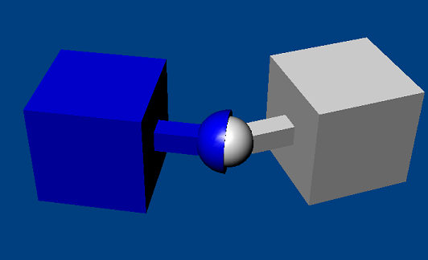
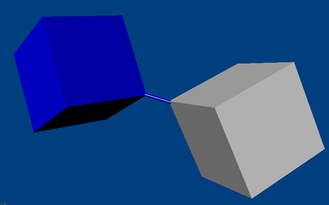

Joints¶
Joint Basics¶
A joint constrains the way two actors move relative to one another. A typical use for a joint would be to model a door hinge or the shoulder of a character. Joints are implemented in the PhysX extensions library and cover many common scenarios, but if you have use cases that are not met by the joints packaged with PhysX, you can implement your own. Since joints are implemented as extensions, the pattern for creating them is slightly different from other PhysX objects.
Creation of simple joints and limits is demonstrated in the SnippetJoint snippet.
To create a joint, call the joint's creation function:
PxRevoluteJointCreate(PxPhysics& physics,
PxRigidActor* actor0, const PxTransform& localFrame0,
PxRigidActor* actor1, const PxTransform& localFrame1);
This has the same pattern for all joints: two actors, and for each actor a constraint frame.
One of the actors must be movable, either a PxRigidDynamic or a PxArticulationLink. The other may be of one of those types, or a PxRigidStatic. Use a NULL pointer here to indicate an implicit actor representing the immovable global reference frame.
Each localFrame argument specifies a constraint frame relative to the actor's global pose. Each joint defines a relationship between the global positions and origins of the constraint frames that will be enforced by the PhysX constraint solver. In this example, the revolute joint constrains the origin points of the two frames to be coincident and their x-axes to coincide, but allows the two actors to rotate freely relative to one another around this common axis.
PhysX supports six different joint types:
- a fixed joint locks the orientations and origins rigidly together
- a distance joint keeps the origins within a certain distance range
- a spherical joint (also called a ball-and-socket) keeps the origins together, but allows the orientations to vary freely.
- a revolute joint (also called a hinge) keeps the origins and x-axes of the frames together, and allows free rotation around this common axis.
- a prismatic joint (also called a slider) keeps the orientations identical, but allows the origin of each frame to slide freely along the common x-axis.
- a D6 joint is a highly configurable joint that allows specification of individual degrees of freedom either to move freely or be locked together. It can be used to implement a wide variety of mechanical and anatomical joints, but is somewhat less intuitive to configure than the other joint types. This joint is covered in detail below.
All joints are implemented as plugins to the SDK through the PxConstraint class. A number of the properties for each joint are configured using the PxConstraintFlag enumeration.
Note
As in the rest of the PhysX API, all joint angles for limits and drive targets are specified in radians.
Visualization¶
All standard PhysX joints support debug visualization. You can visualize the joint frames of each actor, and also any limits the joint may have.
By default, joints are not visualized. To visualize a joint, set its visualization constraint flag and the appropriate scene-level visualization parameters:
scene->setVisualizationParameter(PxVisualizationParameter::eJOINT_FRAMES, 1.0f);
scene->setVisualizationParameter(PxVisualizationParameter::eJOINT_LIMITS, 1.0f);
...
joint->setConstraintFlag(PxConstraintFlag::eVISUALIZATION)
Force Reporting¶
The force applied at a joint may be retrieved after simulation with a call to getForce():
scene->fetchResults(...)
joint->getConstraint().getForce(force, torque);
The force is resolved at the origin of actor1's joint frame.
Note that this force is only updated while the joint's actors are awake.
Breakage¶
All of the standard PhysX joints can be made breakable. A maximum breaking force and torque may be specified, and if the force or torque required to maintain the joint constraint exceeds this threshold, the joint will break. Breaking a joint generates a simulation event (see PxSimulationEventCallback::onJointBreak), and the joint no longer partakes in simulation, although it remains attached to its actors until it is deleted.
By default the threshold force and torque are set to FLT_MAX, making joints effectively unbreakable. To make a joint breakable, specify the force and torque thresholds.
joint->setBreakForce(100.0f, 100.0f);
A constraint flag records whether a joint is currently broken:
bool broken = (joint->getConstraintFlags() & PxConstraintFlag::eBROKEN) != 0;
Breaking a joint causes a callback via PxSimulationEventCallback::onConstraintBreak. In this callback, a pointer to the joint and its type are specified in the externalReference and type field of the PxConstraintInfo struct. If you have implemented your own joint types, use the PxConstraintInfo::type field to determine the dynamic type of the broken constraint. Otherwise, simply cast the externalReference to a PxJoint:
class MySimulationEventCallback
{
void onConstraintBreak(PxConstraintInfo* constraints, PxU32 count)
{
for(PxU32 i=0; i<count; i++)
{
PxJoint* joint = reinterpret_cast<PxJoint*>(constraints[i].externalReference);
...
}
}
}
Projection¶
Under stressful conditions, PhysX' dynamics solver may not be able to accurately enforce the constraints specified by the joint. PhysX provides kinematic projection which tries to bring violated constraints back into alignment even when the solver fails. Projection is not a physical process and does not preserve momentum or respect collision geometry. It is best avoided if practical, but can be useful in improving simulation quality where joint separation results in unacceptable artifacts.
By default projection is disabled. To enable projection, set the linear and angular tolerance values beyond which a joint will be projected, and set the constraint projection flag:
joint->setProjectionLinearTolerance(0.1f);
joint->setConstraintFlag(PxConstraintFlag::ePROJECTION, true);
Very small tolerance values for projection may result in jittering around the joint.
A constraint with projection enabled can be part of a graph of rigid bodies connected by constraints. If this graph is acyclic, the algorithm will choose a root node among the connected rigid bodies, traverse the graph, and project the bodies towards the root. If the constraint graph has cycles, the algorithm will split the graph into multiple acyclic subgraphs, dropping edges that create cycles, and do the projection separately for each. Please note that having more than one constraint attached to a fixed anchor (world or static/kinematic rigid body) in a graph does count as a cycle (for example, a chain of rigid bodies connected with constraints and both ends attached to world anchors). If multiple constraints fight over the same body or conflicting projection directions are specified, the projection direction will be chosen based on the following priorities (highest first):
- world attachment or a rigid static actor with a projecting constraint
- kinematic actor with a projecting constraint
- all dominant dynamic actor (has projecting constraints and all of them are one-way projecting towards this dynamic)
- dominant dynamic actor (same as above but there is at least one two-way projecting constraint as well)
- partially dominant dynamic actor (has at least one one-way projecting constraint towards this dynamic and at least one one-way projecting constraint towards an other actor)
- world attachment or a rigid static actor without any projecting constraints
- kinematic actor without any projecting constraints
- dynamic actor with or without two-way projecting constraints to other dynamics (among these, the one with the highest constraint count wins)
Limits¶
Some PhysX joints constrain not just relative rotation or translation, but can also enforce limits on the range of that motion. For example, in its initial configuration the revolute joint allows free rotation around its axis, but by specifying and enabling a limit, lower and upper bounds may be placed upon the angle of rotation.
Limits are a form of collision, and like collision of rigid body shapes, stable limit behavior requires a contactDistance tolerance specifying how far from the limit the joint configuration may be before the solver tries to enforce it. Note that enforcement always starts before the limit is violated, so the role played by contactDistance for limits is analogous to the role a positive contactDistance value plays in collision detection. A larger contact makes the limit less likely to be violated even at high relative velocity. However, because the limit is active more of the time, the joint is more expensive to simulate.
Limit configuration is specific to each type of joint. To set a limit, configure the limit geometry and set the joint-specific flag indicating that the limit is enabled:
revolute->setLimit(PxJointAngularLimitPair(-PxPi/4, PxPi/4, 0.1f)); // upper, lower, tolerance
revolute->setRevoluteJointFlag(PxRevoluteJointFlag::eLIMIT_ENABLED, true);
Limits may be either hard or soft. When a hard limit is reached, relative motion will simply stop dead if the limit is configured with zero restitution, or bounce if the restitution is non-zero. When a soft limit is violated, the solver will pull the joint back towards the limit using a spring specified by the limit's spring and damping parameters. By default, limits are hard and without restitution, so when the joint reaches a limit motion will simply stop. To specify softness for a limit, declare the limit structure and set the spring and damping parameters directly:
PxJointAngularLimitPair limitPair(-PxPi/4, PxPi/4, 0.1f));
limitPair.spring = 100.0f;
limitPair.damping = 20.0f;
revolute->setRevoluteJointLimit(limitPair);
revolute->setRevoluteJointFlag(PxRevoluteJointFlag::eLIMIT_ENABLED, true);
Note
Limits are not projected.
When using spring limits, the eACCELERATION flag is strongly recommended. This flag will automatically scale the strength of the spring according to the masses and inertias of objects that the limit is acting upon, and can substantially reduce the amount of tuning required for good, stable behavior.
Actuation¶
Some PhysX joints may be actuated by a motor or a spring implicitly integrated by the PhysX solver. While driving simulations with actuated joints is more expensive than simply applying forces, it can provide much more stable control of simulation. See D6 Joint, Prismatic Joint, and Revolute Joint for details
Note
The force generated by actuation is not included in the force reported by the solver, nor does it contribute towards exceeding the joint's breakage force threshold.
Note
Changing the drive parameters for a joint, or activating or deactivating the drive, does not wake sleeping bodies attached to the joint. If required, wake these bodies manually.
When using spring drives (in particular, drives on the D6 joint), the eACCELERATION flag is strongly recommended. This flag will automatically scale the strength of the spring according to the masses and inertias of objects that the limit is acting upon, and can substantially reduce the amount of tuning required for good, stable behavior.
Mass Scaling¶
PhysX joints may apply scale to the mass and moment of inertia of the two connected bodies for the purposes of resolving a joint. For example, if you have two objects in a ragdoll of masses 1 and 10, PhysX will typically resolve the joint by changing the velocity of the lighter body much more than the heavier one. You can apply a mass scale of 10 to the first body to make PhysX change the velocity of both bodies by an equal amount. To ensure the same property holds for both linear and angular velocity, you should adjust the inertia scales in accordance with the bodies' inertias as well. Applying mass scales such that the joint sees similar effective masses and inertias makes the solver converge faster, which can make individual joints seem less rubbery or separated, and sets of jointed bodies appear less twitchy
Many applications that prioritize visual behavior over adherence to physical laws can benefit from tuning these scale values. But if you use this feature, bear in mind that mass and inertia scaling is fundamentally nonphysical. In general momentum will not be conserved, the energy of the system may increase, the force reported for the joint may be incorrect, and non-physical tuning of breakage thresholds and force limits may be required.
Fixed Joint¶

The fixed joint constrains two objects so that the positions and orientations of their constraint frames are the same.
Note
All joints are enforced by the dynamics solver, so although under ideal conditions the objects will maintain their spatial relationship, there may be some drift. A common alternative, which is cheaper to simulate and does not suffer from drift, is to construct a single actor with multiple shapes. However fixed joints are useful, for example, when a joint must be breakable or report its constraint force.
Spherical Joint¶
A spherical joint constrains the origins of the actor's constraint frames to be coincident.
The spherical joint supports a cone limit, which constrains the angle between the X-axes of the two constraint frames. Actor1's X-axis is constrained by a limit cone whose axis is the x-axis of actor0's constraint frame. The allowed limit values are the maximum rotation around the y- and z- axes of that frame. Different values for the y- and z- axes may be specified, in which case the limit takes the form of an elliptical angular cone:
joint->setLimitCone(PxJointLimitCone(PxPi/2, PxPi/6, 0.01f);
joint->setSphericalJointFlag(PxSphericalJointFlag::eLIMIT_ENABLED, true);
Note that very small or highly elliptical limit cones may result in solver jitter.
Note
Visualization of the limit surface can help considerably in understanding its shape.
Revolute Joint¶

A revolute joint removes all but a single rotational degree of freedom from two objects. The axis along which the two bodies may rotate is specified by the common origin of the joint frames and their common x-axis. In theory, all origin points along the axis of rotation are equivalent, but simulation stability is best in practice when the point is near where the bodies are closest.
The joint supports a rotational limit with upper and lower extents. The angle is zero where the y- and z- axes of the joint frames are coincident, and increases moving from the y-axis towards the z-axis:
joint->setLimit(PxJointLimitPair(-PxPi/4, PxPi/4, 0.01f);
joint->setRevoluteJointFlag(PxRevoluteJointFlag::eLIMIT_ENABLED, true);
The joint also supports a motor which drives the relative angular velocity of the two actors towards a user-specified target velocity. The magnitude of the force applied by the motor may be limited to a specified maximum:
joint->setDriveVelocity(10.0f);
joint->setRevoluteJointFlag(PxRevoluteJointFlag::eDRIVE_ENABLED, true);
By default, when the angular velocity at the joint exceeds the target velocity the motor acts as a brake; a freespin flag disables this braking behavior.
The drive force limit for a revolute joint may be interpreted either as a force or an impulse, depending on the value of PxConstraintFlag::eDRIVE_LIMITS_ARE_FORCES
Prismatic Joint¶

A prismatic joint prevents all rotational motion, but allows the origin of actor1's constraint frame to move freely along the x-axis of actor0's constraint frame. The prismatic joint supports a single limit with upper and lower bounds on the distance between the two constraint frames' origin points:
joint->setLimit(PxJointLimitPair(-10.0f, 20.0f, 0.01f);
joint->setPrismaticJointFlag(PxPrismaticJointFlag::eLIMIT_ENABLED, true);
Distance Joint¶
The distance joint keeps the origins of the constraint frames within a certain range of distance. The range may have both upper and lower bounds, which are enabled separately by flags:
joint->setMaxDistance(10.0f);
joint->setDistanceJointFlag(eMAX_DISTANCE_ENABLED, true);
In addition, when the joint reaches the limits of its range motion beyond this distance may either be entirely prevented by the solver, or pushed back towards its range with an implicit spring, for which spring and damping parameters may be specified.
D6 Joint¶
The D6 joint is by far the most complex of the standard PhysX joints. In its default state it behaves like a fixed joint - that is, it rigidly fixes the constraint frames of its two actors. However, individual degrees of freedom may be unlocked to permit any combination of rotation around the x-, y- and z- axes, and translation along these axes.
Locking and Unlocking Axes¶
To unlock and lock degrees of freedom, use the joint's setMotion function:
d6joint->setMotion(PxD6Axis::eX, PxD6Motion::eFREE);
Unlocking translational degrees of freedom allows the origin point of actor1's constraint frame to move along a subset of the axes defined by actor0's constraint frame. For example, unlocking just the X-axis creates the equivalent of a prismatic joint.
Rotational degrees of freedom are partitioned as twist (around the X-axis of actor0's constraint frame) and swing (around the Y- and Z- axes). Different effects are achieved by unlocking various combinations of twist and swing.
- if just a single degree of angular freedom is unlocked, the result is always equivalent to a revolute joint. It is recommended that if just one angular freedom is unlocked, it should be the twist degree, because the joint has various configuration options and optimizations that are designed for this case.
- if both swing degrees of freedom are unlocked but the twist degree remains locked, the result is a zero-twist joint. The x-axis of actor1 swings freely away from the x-axis of actor0 but twists to minimize the rotation required to align the two frames. This creates a kind of isotropic universal joint which avoids the problems of the usual 'engineering style' universal joint (see below) that is sometimes used as a kind of twist constraint. There is a nasty singularity at π radians (180 degrees) swing, so a swing limit should be used to avoid the singularity.
- if one swing and one twist degree of freedom are unlocked but the remaining swing is kept locked, a zero-swing joint results (often also called a universal joint). If for example the SWING1 (y-axis rotation) is unlocked, the x-axis of actor1 is constrained to remain orthogonal to the z-axis of actor0. In character applications, this joint can be used to model an elbow swing joint incorporating the twist freedom of the lower arm or a knee swing joint incorporating the twist freedom of the lower leg. In vehicle applications, these joints can be used as 'steered wheel' joints in which the child actor is the wheel, free to rotate about its twist axis, while the free swing axis in the parent acts as the steering axis. Care must be taken with this combination because of anisotropic behavior and singularities (beware the dreaded gimbal lock) at angles of π/2 radians (90 degrees), making the zero-twist joint a better behaved alternative for most use cases.
- if all three angular degrees are unlocked, the result is equivalent to a spherical joint.
Three of the joints from PhysX 2 that have been removed from PhysX 3 can be implemented as follows:
The cylindrical joint (with axis along the common x-axis of the two constraint frames) is given by the combination:
d6joint->setMotion(PxD6Axis::eX, PxD6Motion::eFREE); d6joint->setMotion(PxD6Axis::eTWIST, PxD6Motion::eFREE);
the point-on-plane joint (with plane axis along the x-axis of actor0's constraint frame) is given by the combination:
d6joint->setMotion(PxD6Axis::eY, PxD6Motion::eFREE); d6joint->setMotion(PxD6Axis::eZ, PxD6Motion::eFREE); d6joint->setMotion(PxD6Axis::eTWIST, PxD6Motion::eFREE); d6joint->setMotion(PxD6Axis::eSWING1, PxD6Motion::eFREE); d6joint->setMotion(PxD6Axis::eSWING2, PxD6Motion::eFREE);
the point-on-line joint (with axis along the x-axis of actor0's constraint frame) is given by the combination:
d6joint->setMotion(PxD6Axis::eX, PxD6Motion::eFREE); d6joint->setMotion(PxD6Axis::eTWIST, PxD6Motion::eFREE); d6joint->setMotion(PxD6Axis::eSWING1, PxD6Motion::eFREE); d6joint->setMotion(PxD6Axis::eSWING2, PxD6Motion::eFREE);
Note
Angular projection is implemented only for the cases when two or three angular degrees of freedom are locked.
Limits¶
Instead of specifying that an axis is free or locked, it may also be specified as limited. The D6 supports three different limits which may be used in any combination.
A single linear limit with only an upper bound is used to constrain any of the translational degrees of freedom. The limit constrains the distance between the origins of the constraint frames when projected onto these axes. For example, the combination:
d6joint->setMotion(PxD6Axis::eX, PxD6Motion::eFREE);
d6joint->setMotion(PxD6Axis::eY, PxD6Motion::eLIMITED);
d6joint->setMotion(PxD6Axis::eZ, PxD6Motion::eLIMITED);
d6joint->setLinearLimit(PxJointLinearLimit(1.0f, 0.1f));
constrains the y- and z- coordinates of actor1's constraint frame to lie within the unit disc. Since the x-axis is unconstrained, the effect is to constrain the origin of actor1's constraint frame to lie within a cylinder of radius 1 extending along the x-axis of actor0's constraint frame.
The twist degree of freedom is limited by a pair limit with upper and lower bounds, identical to the limit of the revolute joint.
If both swing degrees of freedom are limited, a limit cone is generated, identical to the limit of the spherical joint. As with the spherical joint, very small or highly elliptical limit cones may result in solver jitter.
If only one swing degree of freedom is limited, the corresponding angle from the cone limit is used to limit rotation. If the other swing degree is locked, the maximum value of the limit is π radians (180 degrees). If the other swing degree is free, the maximum value of the limit is π/2 radians (90 degrees).
Drives¶
The D6 has a linear drive model, and two possible angular drive models. The drive is a proportional derivative drive, which applies a force as follows:
force = spring * (targetPosition - position) + damping * (targetVelocity - velocity)
The drive model may also be configured to generate a proportional acceleration instead of a force, factoring in the masses of the actors to which the joint is attached. Acceleration drive is often easier to tune than force drive.
- The linear drive model for the D6 has the following parameters:
- target position, specified in actor0's constraint frame
- target velocity, specified in actor0's constraint frame
- spring
- damping
- forceLimit - the maximum force the drive can apply (note that this can be an impulse, depending on PxConstraintFlag::eDRIVE_LIMITS_ARE_FORCES)
- acceleration drive flag
The drive attempts to follow the desired position input with the configured stiffness and damping properties. A physical lag due to the inertia of the driven body acting through the drive spring will occur; therefore, sudden step changes will result over a number of time steps. Physical lag can be reduced by stiffening the spring or supplying a velocity target.
With a fixed position input and a zero target velocity, a position drive will spring about that drive position with the specified springing/damping characteristics:
// set all translational degrees free
d6joint->setMotion(PxD6Axis::eX, PxD6Motion::eFREE);
d6joint->setMotion(PxD6Axis::eY, PxD6Motion::eFREE);
d6joint->setMotion(PxD6Axis::eZ, PxD6Motion::eFREE);
// set all translation degrees driven:
PxD6Drive drive(10.0f, -20.0f, PX_MAX_F32, true);
d6joint->setDrive(PxD6JointDrive::eX, drive);
d6joint->setDrive(PxD6JointDrive::eY, drive);
d6joint->setDrive(PxD6JointDrive::eZ, drive);
// Drive the joint to the local(actor[0]) origin - since no angular
// dofs are free, the angular part of the transform is ignored
d6joint->setDrivePosition(PxTransform(1.0f));
d6joint->setDriveVelocity(PxVec3(PxZero));
Angular drive differs from linear drive in a fundamental way: it does not have a simple and intuitive representation free from singularities. For this reason, the D6 joint provides two angular drive models - twist and swing and SLERP (Spherical Linear Interpolation).
The two models differ in the way they estimate the path in quaternion space between the current orientation and the target orientation. In a SLERP drive, the quaternion is used directly. In a twist and swing drive, it is decomposed into separate twist and swing components and each component is interpolated separately. Twist and swing is intuitive in many situations; however, there is a singularity when driven to 180 degrees swing. In addition, the drive will not follow the shortest arc between two orientations. On the other hand, SLERP drive will follow the shortest arc between a pair of angular configurations, but may cause unintuitive changes in the joint's twist and swing.
The angular drive model has the following parameters:
- An angular velocity target specified relative to actor0's constraint frame
- An orientation target specified relative to actor0's constraint frame
- drive specifications for SLERP (slerpDrive), swing (swingDrive) and twist (twistDrive):
- spring - amount of torque needed to move the joint to its target orientation proportional to the angle from the target (not used for a velocity drive).
- damping - applied to the drive spring (used to smooth out oscillations about the drive target).
- forceLimit - the maximum torque the drive can apply (note that this can be an impulsive torque, depending on the value PxConstraintFlag::eDRIVE_LIMITS_ARE_FORCES)
- acceleration drive flag. If this flag is set the acceleration (rather than the force) applied by the drive is proportional to the angle from the target.
Best results will be achieved when the drive target inputs are consistent with the joint freedom and limit constraints.
Note
if any angular degrees of freedom are locked, the SLERP drive parameters are ignored. If all angular degrees of freedom are unlocked, and parameters are set for multiple angular drives, the SLERP parameters will be used.
Configuring Joints for Best Behavior¶
The behavior quality of joints in PhysX is largely determined by the ability of the iterative solver to converge. Better convergence can be achieved simply by increasing the attributes of the PxRigidDynamic which controls the solver iteration count. However, joints can also be configured to produce better convergence.
- the solver can have difficulty converging well when a light object is constrained between two heavy objects. Mass ratios of higher than 10 are best avoided in such scenarios.
- when one body is significantly heavier than the other, make the lighter body the second actor in the joint. Similarly, when one of the objects is static or kinematic (or the actor pointer is NULL) make the dynamic body the second actor.
A common use for joints is to move objects around in the world. Best results are obtained when the solver has access to the velocity of motion as well as the change in position.
- if you want a very stiff controller that moves the object to specific position each frame, consider jointing the object to a kinematic actor and use the setKinematicTarget function to move the actor.
- if you want a more springy controller, use a D6 joint with a drive target to set the desired position and orientation, and control the spring parameters to increase stiffness and damping. In general, acceleration drive is much easier to tune than force drive.
When using mass scaling or when constraining bodies with infinite inertia along some axes, the reduction in degrees of freedom of the rigid bodies combined with small inaccuracies in floating point calculation can produce arbitrarily stiff constraint responses trying to correct unnoticeably small errors. This can appear, for example, when attempting to perform 2D-simulation using infinite inertia to suppress velocity out of the plane of simulation. In these cases, set the flag PxConstraintFlag::eDISABLE_PREPROCESSING, and set the minResponseThreshold on the constraint to a small value, e.g. 1e-8. This will result in such stiff constraint rows being ignored when encountered, and can considerably improve simulation quality.
Custom Constraints¶
It is also possible to add new joint types to PhysX. Use the existing joints in the PhysXExtensions library as a reference, and also the source for SnippetCustomJoint, which shows how to implement a Pulley Joint. Serializing custom objects is discussed in the chapter Serialization, so the discussion here is limited to how to achieve the desired behavior in simulation. This is an advanced topic, and assumes familiarity with the mathematics underlying rigid body simulation. The presentation here assumes that the joint constrains two bodies; the case for a static body is equivalent to a dynamic body of infinite mass whose transform is the identity.
The functions which implement dynamic behavior of joints are PhysX shaders, similar in nature to the PxFilterShader (see Collision Filtering). In particular, the functions may execute in parallel and asynchronously, and should not access any state except that passed in as parameters.
To create a custom joint class, define the following:
- the functions which implement the behavior of the constraint. The functions must be stateless, because they may be called simultaneously from multiple threads. When each function is called, PhysX passes a constant block which can be used to store the joint configuration parameters (offsets, axes, limits etc).
- a static instance of PxConstraintShaderTable containing pointers to the functions
- a class implementing the PxConstraintConnector interface, that connects the custom joint to PhysX.
Defining Constraint Behavior¶
There are two functions that define the joint behavior: the solver preparation function, which generates inputs to PhysX' velocity-based constraint solver, and the projection function, which allows direct correction of position error.
The processing sequence during simulation is as follows:
- in the simulate() function, before starting simulation the scene updates an internal copy of the joint's constant block (so that the joint's copy may be modified during simulation without causing races).
- collision detection runs, and may wake bodies. If the joint connects two bodies, the simulation will ensure that either both bodies are awake, or neither is.
- for every joint connected to an awake body, the simulation calls the solver preparation function.
- the solver updates body velocities and positions.
- if the constraint's ePROJECTION flag is set, the simulation calls the joint projection function.
The Solver Preparation Function¶
The solver preparation function for a joint has the following signature:
PxU32 prepare(Px1DConstraint* constraints,
PxVec3& bodyAWorldOffset,
PxU32 maxConstraints,
PxConstraintInvMassScale &invMassScale,
const void* constantBlock,
const PxTransform& bA2w,
const PxTransform& bB2w);
The parameters are as follows:
- constraints is the output buffer of constraint rows.
- bodyAWorldOffset is the point, specified in world space as an offset from the origin of bodyA, at which the constraint forces act to enforce the joint. The constraint solver ignores this value as the information is already encoded in the constraint array, but when reporting forces it is necessary to choose a point at which the force is considered to act. For PhysX joints, the attachment point of the joint on body B is used.
- maxConstraints is the size of the buffer, which limits the number of constraint rows that may be generated.
- invMassScale is the inverse mass scales which should be applied to the bodies for the purpose of resolving the joint. In the standard joints, these are just the joint's mass scaling parameters (see Mass Scaling).
- constantBlock is the simulation's copy of the joint constant block.
- bA2w is the transform of the first body. It is the identity transform if the actor is static, or a NULL pointer was supplied in constraint creation.
- bB2w is the transform of the second body. It is the identity transform if the actor is static, or a NULL pointer was supplied in constraint creation.
The role of the solver preparation function is to populate the buffer of Px1DConstraints, provide the point of application for force reporting, and provide the mass scaling properties. The return value is the number of Px1DConstraints generated in the output buffer.
Notice that although the joint parameters (relative pose etc) are typically specified relative to an actor, the solver preparation function works with the transforms of the underlying rigid bodies. The constraint infrastructure (see Data Management) assists joints in maintaining consistency when, for example, the application modifies the center of mass of an actor.
Each Px1D constraint constrains one degree of freedom between the two bodies. The structure looks like this:
struct Px1DConstraint
{
PxVec3 linear0;
PxReal geometricError;
PxVec3 angular0;
PxReal velocityTarget;
PxVec3 linear1;
PxReal minImpulse;
PxVec3 angular1;
PxReal maxImpulse;
union
{
struct SpringModifiers
{
PxReal stiffness;
PxReal damping;
} spring;
struct RestitutionModifiers
{
PxReal restitution;
PxReal velocityThreshold;
} bounce;
} mods;
PxReal forInternalUse;
PxU16 flags;
PxU16 solveHint;
}
Each Px1DConstraint is either a hard constraint (for example, one axis of a fixed joint) or a soft constraint (for example, a spring). A joint may have a mixture of hard and soft constraint rows - for example, the actuated joint at a rag doll shoulder often has:
- 3 hard 1D-constraints which prevent the shoulder from separating.
- 3 hard 1D-constraints constraining the angular degrees of freedom within some limits.
- 3 soft constraints simulating resistance to angular motion from muscles.
The constraint is treated as hard unless the Px1DConstraintFlag::eSPRING flag is set.
For both soft and hard constraints, the solver velocity for each row is the quantity:
v = body0vel.dot(lin0, ang0) - body1vel.dot(lin1, ang1)
Hard Constraints¶
For a hard constraint, the solver attempts to generate:
a set of motion solver velocities vMotion for objects which, when integrated, respect the constraint errors, represented by the equation:
vMotion + (geometricError / timestep) = velocityTarget
a set of post-simulation solver velocities vNext for the objects which respect the constraints:
vNext = velocityTarget
The motion velocities are used for integration and then discarded. The post-simulation velocities are the values that getLinearVelocity() and getAngularVelocity() return.
There are two special options for hard constraints, both most often used to implement limits: restitution and velocity biasing. They are set by the constraint flags eRESTITUTION and eKEEPBIAS, are mutually exclusive, and restitution takes priority (in the sense that if restitution is set, biasing is ignored).
Restitution simulates bouncing (off a limit, for example). If the impact solver velocity vCurrent at the start of simulation exceeds the restitution velocity threshold, the target velocity of the constraint will be set to:
restitution * -vCurrent
and the input velocityTarget field will be ignored. To use restitution, set Px1DConstraintFlag::eRESTITUTION.
Velocity biasing generates post-simulation velocities to satisfy the same constraints as for the motion velocities:
vNext + (geometricError / timestep) = velocityTarget
This can be useful if, for example, the joint is approaching a limit but has not yet reached it. If the target velocity is 0 and the geometric error is the distance remaining to the limit, the solver will constrain the velocity below that required to violate the limit after integration. The joint should then converge smoothly to the limit.
Soft Constraints¶
Alternatively, the solver can attempt to resolve the velocity constraint as an implicit spring. In this case, the motion velocity vMotion and post-simulation velocity vNext are the same. The solver solves the equation:
F = stiffness * -geometricError + damping * (velocityTarget - v)
where F is the constraint force.
Springs are fully implicit: that is, the force or acceleration is a function of the position and velocity after the solve. There is one special option that applies only to soft constraints: acceleration springs (PxConstraintFlag::eACCELERATION). With this option the solver will scale the magnitude of the force in accordance with the response of the two bodies; effectively it implicitly solves the equation:
acceleration = stiffness * -geometricError + damping * (velocityTarget - v)
Force Limits and Reporting¶
All constraints support limits on the minimum or maximum impulse applied for each row. There is a special flag for force limits: eHAS_DRIVE_FORCE_LIMIT. If this flag is set, the force limits will be scaled by the timestep unless PxConstraintFlag::eLIMITS_ARE_FORCES is set for the constraint.
The flag eOUTPUT_FORCE flag on a 1D constraint determines whether the force applied for this row should be included in the constraint force output. The reporting force is also used internally to determine joint breakage. For example, if creating a spherical joint with angular drive that breaks when the stress on the linear part exceeds a threshold, set the flag for the linear equality rows but not the angular drive rows.
Solver Preprocessing¶
The joint solver attempts to preprocess hard constraints to improve convergence. The solveHint value controls preprocessing for each row:
- if the constraint is a hard equality constraint with unbounded impulse limits (i.e. the impulse limits are -PX_MAX_FLT and PX_MAX_FLT), set this to PxConstraintSolveHint::eEQUALITY.
- If one of the force limits is zero and the other unbounded, set it to PxConstraintSolveHint::eINEQUALITY.
- for all soft constraints, and hard constraints with impulse limits other than the above, set it to PxConstraintSolveHint::eNONE.
The solver does not check that the hint value is consistent with the values in the Px1DConstraint. Using inconsistent values may result in undefined behavior.
The Projection Function¶
The other behavior that joints may specify for simulation is projection. This is a purely positional correction designed to act when the velocity-based solver fails. The projection function has the following signature:
typedef void (*PxConstraintProject)(const void* constantBlock,
PxTransform& bodyAToWorld,
PxTransform& bodyBToWorld,
bool projectToA);
It receives the constant block and the two body transforms. It should update the bodyBToWorld transform if the projectToA flag is set, and otherwise the bodyBToWorld transform. See the implementations in the extensions library for examples of how to define projection functions.
The Constraint Shader Table¶
After coding the behavior functions, define a structure of type PxConstraintShaderTable, which holds the pointers to the constraint functions. This structure will be passed as an argument to PxPhysics::createConstraint, and is shared by all instances of the joint:
struct PxConstraintShaderTable
{
PxConstraintSolverPrep solverPrep;
PxConstraintProject project;
PxConstraintVisualize visualize;
};
The constraint visualizer allows the joint to generate visualization information using the PxConstraintVisualizer interface. The functionality of this interface is somewhat biased towards the standard joints; examples of its use can be found in the extensions library.
Data Management¶
Next, define the class which lets PhysX manage the joint. This class should inherit from the PxConstraintConnector interface.
To create a joint, call PxPhysics::createConstraint. The arguments to this function are the constrained actors, the connector object, the shader table, and the size of the joint's constant block. The return value is a pointer to PxConstraint object.
PxConstraintConnector has a number of data management callbacks:
virtual void* prepareData();
virtual void onConstraintRelease();
virtual void onComShift(PxU32 actor);
virtual void onOriginShift(const PxVec3& shift);
virtual void* getExternalReference(PxU32& typeID);
These functions are usually boilerplate; sample implementations can be found for the joints in the extensions library:
- The prepareData() function requests a pointer to the joint constant block, and allows the joint to update any state caches etc. When the function returns, the scene makes an internal copy of this data, so that the joint may be modified during simulation without race conditions. The function is called at the start of the simulation step after the joint is inserted into the scene, and on a subsequent simulation step if PhysX is informed that the joint's state has changed. To inform PhysX that the joint state has changed, call PxConstraint::markDirty().
- onConstraintRelease() is associated with joint deletion. To delete a joint, call PxConstraint::release() on the constraint. When it is safe to destroy the joint (because no internal references are being held by currently executing simulation threads) the constraint code will call PxConstraint::onConstraintRelease(). This function can safely run the destructor and release the joint's memory etc.
- onComShift() is called when the application calls setCMassLocalPose() on one of the actors connected by the joint. This is provided because the solver preparation and projection functions are defined using the frame of the underlying rigid body, but the joint configuration is typically defined in terms of the actors.
- onOriginShift() is called when the application shifts the origin of a scene. This is necessary because some joints may have a NULL actor, signifying that they are attached to the world frame.
- getExternalReference() is used by PhysX to report simulation events involving constraints, particularly breakage. The returned pointer is passed directly to the application in the event callback, along with the typeID which the application can use in order to cast the pointer to the appropriate type. The typeID should be distinct for each custom joint type, and different from any of the values in PxJointConcreteType. If the joint also implements the PxBase interface, use the concrete type value from PxBase for the typeID.